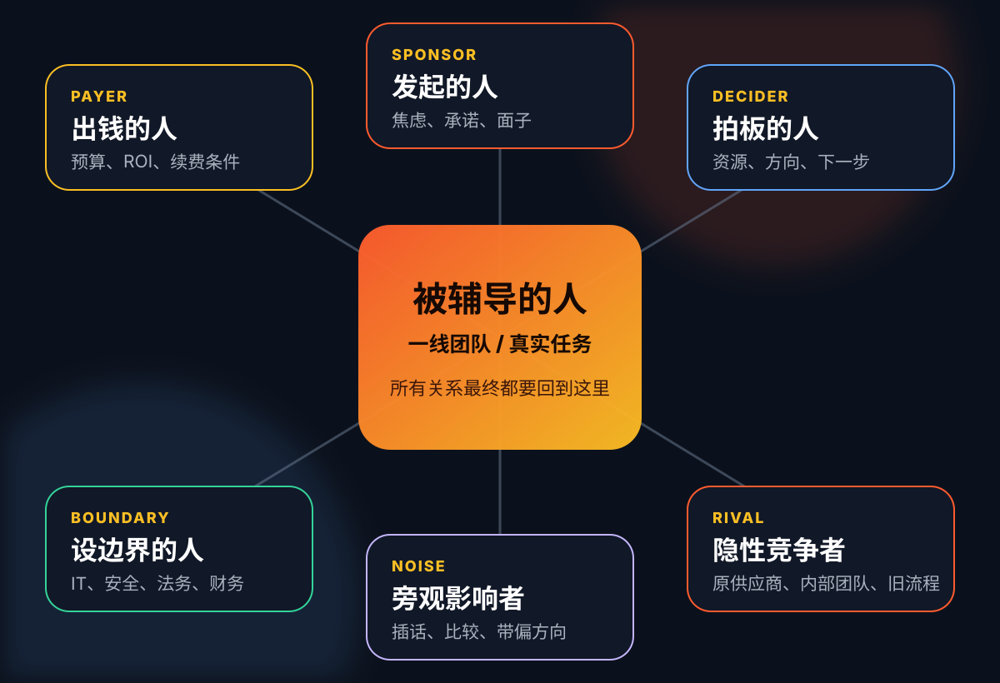
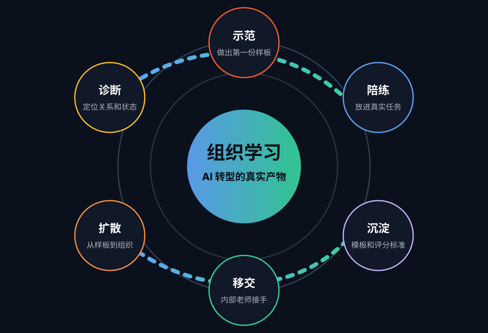
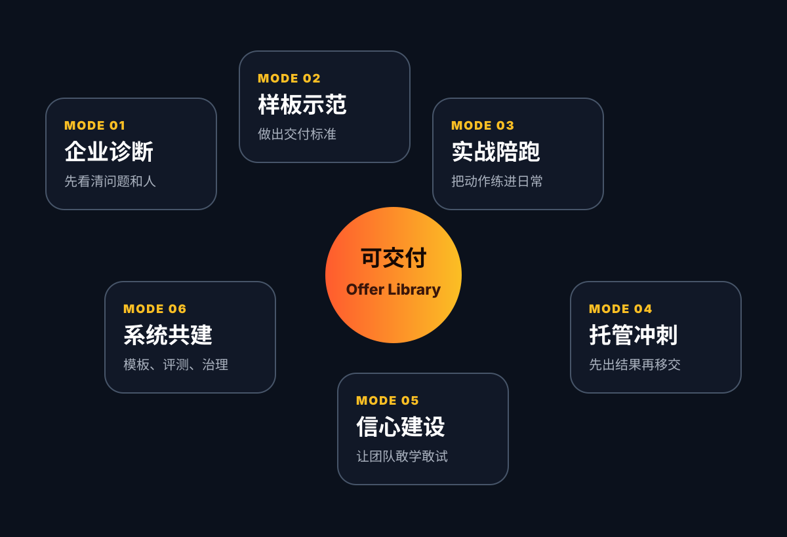

先弄清谁最需要老师
谁掏钱、谁着急、谁学习、谁说了算。关系没有画明白，后面的方案就会失焦。
Rolling AI 企业 AI 转型方法论
模型能力只是教材，真正决定成败的是：谁最需要老师、组织现在是什么基础、管理风格是什么，以及老师到底怎么交付。
整场分享按家庭教师的职业技能展开：先看清家庭关系，再判断孩子状态，最后决定怎么教、怎么交付、怎么避坑。
谁掏钱、谁着急、谁学习、谁说了算。关系没有画明白，后面的方案就会失焦。
企业基础是优秀、普通，还是已经很吃力。不同基础不能用同一种教法。
强控制、长线陪伴，还是干脆外包。管理风格会直接决定转型节奏。
教、做、陪、冲刺、鼓励、共建都不一样，每一种都要包装成明确 Offer。
高层看进展，一线看方法，IT 和财务看边界、风险和账。
旁观者、KPI、Demo 成瘾、安全后置，都会让 AI 转型走偏。
企业 AI 转型最危险的误判，是以为客户只有一个。事实上，购买、学习、验收和干预，经常分属于不同的人。
这一页解决两个问题：谁出钱、谁发起、谁真正学习可能不是同一个人；旁边还有一群不负责交付、但会影响判断的人。

客户识别不是行政流程，而是把“谁要什么、怕什么、怎么验收”讲清楚。问清楚之后，后面的方案才不会漂。
这些问题听起来专业，但得不到真实答案。
Rolling AI 开局要把角色、目标和产物问出来。
企业 AI 转型经常不是被核心用户拖垮，而是被外围意见、隐藏 KPI、非正式权力和比较心理拖偏。
每个角色都可以帮项目前进，也可能制造反作用。关键是提前设计表达入口、决策权和升级机制。
只要本月 ROI，不愿意为组织学习付费。应对：同时汇报短期分数和能力资产。
为了争取资源，把效果说得太满。应对：把承诺拆成阶段验收点。
口头支持，真实任务不拿出来练。应对：每周必须交付真实作业。
方案都做完了，安全和权限才开始拦。应对：第一周就拉 IT 入场。
不了解过程，却持续用别人的经验干预。应对：设意见入口和最终拍板人。
原供应商、内部团队担心被替代，制造怀疑。应对：提前承认利益变化。
同样是补课，差生、普通生、尖子生的打法完全不同；同样是 AI 转型，企业基础和 CEO 管理风格会决定项目形态。
不要只判断客户“先进不先进”，还要判断 CEO 怎么管理 AI 转型：压指标、陪长线，还是直接外包。
团队本来就强，老板还想冲更高指标。重点是高阶评测、效率上限和质量标准。
有高手、有耐心，适合把最佳实践变成 Champion 机制、案例库和内部讲师。
客户懂业务但不想做复杂交付。可以代工，但必须同步沉淀标准和移交包。
基础一般但压力大，先用 4-6 周打一个指标，让管理层看到真实变化。
把 AI 放进周会、复盘、材料、运营动作里，每周都有真实作品和复盘。
客户愿意买结果但承接弱，先做样板，同时绑定学习交接和验收。
老板急、一线怕、数据乱。先止血，不要上来承诺全面转型。
管理层愿意长期做，但流程和数据底子差。先补基本功，再谈高级 AI。
什么都想扔给外部，内部没人接。最先要设边界和退出路径。
这类客户最大的问题不是不会用某个工具，而是流程、数据、责任和信心都不稳。Rolling AI 的工作不能一上来卖“高级玩法”。
先处理混乱、责任和信心。这里的第一价值不是炫技，而是让客户从“乱”变成“能开始”。
类型：特别差基础 × 虎妈式强控制
类型：特别差基础 × 长线可持续式
类型：特别差基础 × 完全外包式
普通基础的客户通常不是完全不会，而是用得零散、没有标准、没有复盘。最好的工作方式是让他们在真实任务里形成肌肉。
客户已经能启动，但动作零散。我们要把一次成果变成可重复的节奏，让团队每周真的用起来。
类型：普通基础 × 虎妈式强控制
类型：普通基础 × 长线可持续式
类型：普通基础 × 完全外包式
客户越优秀，越不能只讲基础工具。Rolling AI 的价值要升级到评测体系、组织扩散、高手方法沉淀。
客户已有能力，Rolling AI 要做的是高阶教练：评测标准、高手复盘、组织扩散和复杂样板。
类型：优秀基础 × 虎妈式强控制
类型：优秀基础 × 长线可持续式
类型：优秀基础 × 完全外包式
九宫格不是为了贴标签，而是为了减少误配：同一个 AI 能力，落到不同客户身上，应该卖成不同的 Offer。

每一步都必须有产物。否则九宫格只是好看的分析图，不会变成客户能购买、团队能执行的项目。
先判断客户到底是哪一格
把诊断结果翻译成服务 Offer
把能做和不能做都提前写清楚
家庭教师不能只会讲课，也不能永远替孩子写作业。AI 转型服务必须提前定义交付边界。
每一种服务模式都要讲清楚：核心工作、目标、方法、适合时间段和最大风险。这样客户才知道自己买的不是一堆顾问小时。

这一页把服务模式讲成可以卖、可以交付、可以验收的 Offer，而不是一句抽象的“我们帮你做 AI”。
把模糊需求翻译成可执行地图
访谈出钱人、发起人、一线、IT 安全；画关系图；做九宫格定位；选出 3 个最值得做的真实场景。
第 0-2 周，或客户刚表达“想做 AI 但不知道从哪开始”时。
让客户知道“我们不是缺一个 AI 工具，而是要先选对场景、选对人、选对节奏”。
只交一份厚报告，没有马上进入行动，客户会觉得不值。
用访谈、流程走查、样本文档评审、数据边界检查，把模糊需求变成可执行清单。
AI 转型体检包：关系图 + 九宫格定位 + 场景优先级 + 90 天路线。
这一页把服务模式讲成可以卖、可以交付、可以验收的 Offer，而不是一句抽象的“我们帮你做 AI”。
让客户看到好作业的标准
选择一个真实任务，由 Rolling AI 做出高质量样板，并把过程、提示词、判断标准拆给客户看。
第 2-4 周，尤其适合客户怀疑 AI 价值、需要可见成果时。
让客户第一次看到“好作业长什么样”，建立质量标准和信任。
客户只记住“外部老师很厉害”，没有学会怎么做。
样板交付 + 过程录屏 + 评分表 + 反讲会，让客户不只是看结果，而是理解方法。
AI 样板示范包：1 个真实场景样板 + 方法拆解 + 复用模板。
这一页把服务模式讲成可以卖、可以交付、可以验收的 Offer，而不是一句抽象的“我们帮你做 AI”。
把 AI 放进每周真实任务
拿客户每周真实任务一起做：写材料、做分析、建流程、复盘会议，让 AI 进入日常工作。
第 4-8 周，适合普通基础、长线培养型客户。
让团队从“会试用”变成“会持续使用”，形成稳定工作肌肉。
陪跑变成随叫随到答疑，问题越来越碎，无法沉淀。
固定陪练时段、错题本、模板库、每周作品墙、问题分级处理。
AI 工作习惯陪跑：周度共创 + 错题本 + 模板迭代 + 作品复盘。
这一页把服务模式讲成可以卖、可以交付、可以验收的 Offer，而不是一句抽象的“我们帮你做 AI”。
先出结果，再把能力交回去
Rolling AI 先接手一个关键窗口任务：汇报材料、投标方案、运营流程、知识库搭建，并设计交接。
客户有紧急节点、重要汇报、短期 KPI，或 B3/C3 外包倾向明显时。
用看得见的业务成果换取组织信任，同时避免客户长期依赖外部。
越做越像外包，客户能力没有增长，需求边界不断扩大。
托管交付 + 录屏 + 模板 + 反讲 + 交接清单。每次代劳都要有能力回流动作。
托管冲刺包：关键成果交付 + 能力移交包 + 下一阶段共建建议。
这一页把服务模式讲成可以卖、可以交付、可以验收的 Offer，而不是一句抽象的“我们帮你做 AI”。
降低焦虑，让团队敢学敢试
处理一线焦虑、替代恐惧、试错压力和管理层过高期待，设计低风险练习和小胜利。
转型初期、团队抵触期、样板失败后，或者强控制客户压力过大时。
让团队愿意拿真实任务出来，不再把 AI 当成考核压力或替代威胁。
只做气氛安抚，没有任务推进，项目变成心理按摩。
低风险任务、公开表扬、失败复盘、角色保护、管理层预期校准。
AI 信心恢复包：小胜利任务 + 团队门诊 + Sponsor 沟通脚本。
这一页把服务模式讲成可以卖、可以交付、可以验收的 Offer，而不是一句抽象的“我们帮你做 AI”。
把方法做成模板、评测和治理
共建模板库、场景库、评分标准、Champion 机制、治理节奏和内部讲师训练。
已经有 2-3 个样板，管理层愿意长期投入，内部有 Champion 候选人时。
让客户不只完成几个样板，而是具备持续识别、复盘、扩散 AI 的能力。
系统做得太重，一线觉得又多了一套管理负担。
组件库、评测表、案例复盘会、内部讲师认证、治理看板。
AI 学习系统共建：模板库 + 评测体系 + Champion 训练 + 治理节奏。
健康路径不是“老师一直做”，而是从示范到共做，再到客户独立完成，最后内部可以教别人。
示范高质量样板，让客户先看到标准和可能性。同步展示提示词、判断过程和评分口径，建立第一轮信任。
拿真实任务陪跑，一起改材料、改流程、改交付物。客户要理解方法，而不是只看外部老师表演。
客户自己做，Rolling AI 只做反馈和纠偏。模板、检查表、错题本开始成型，外部依赖开始下降。
学生成为老师，优秀案例进入内部扩散。项目从“交付一个结果”变成“组织掌握一种学习方式”。
家长要看到进展、风险和确定性；孩子要看到方法、信心和下一步。企业 AI 成果也必须被翻译给不同对象。
CEO、业务负责人、一线、IT、安全、财务看到的是同一个项目，但他们要判断的问题完全不同。
不是所有人都需要看全部过程。好的汇报像翻译器：把同一个成果翻成不同角色能决策的语言。
判断值不值得继续加码
让一线知道明天怎么做
确认可控、可算、可持续
不要只汇报“做了培训、做了工具、做了 demo”，而要汇报组织是否真的开始会学。
这页像“家长报告”：不堆过程，把进步、能力、影响和风险翻译成下一步决策。
项目有没有从演示走到日常
团队是不是开始自己会做
结果是不是让业务更快更稳
下一阶段要什么配合
每个节点都要有会议名字、参会对象和汇报内容。这样客户知道项目走到哪里，也知道自己什么时候要参与。
汇报不是念进度，而是持续回答三个问题：走到哪里、谁要参与、下一步如何决策。
给谁看：Sponsor、决策层、IT。
汇报：为什么做、谁负责、什么算成功。
产物：关系图、目标表、边界表。
给谁看：业务 owner、一线骨干。
汇报：真实痛点、流程卡点、数据红线。
产物：九宫格定位、风险清单。
给谁看：业务、IT、安全。
汇报：先做哪 3 个场景，为什么先做。
产物：场景优先级、样板任务卡。
给谁看：高层、Sponsor、一线。
汇报：样板成果、效率变化、质量标准。
产物：示范样板、评分表。
给谁看：一线团队、Champion。
汇报：错题本、复用模板、阻力变化。
产物：模板库、作品墙。
给谁看：管理层、owner、IT。
汇报：能力移交、治理机制、下一阶段路线。
产物：移交包、路线图。
很多 AI 转型不是失败在能力不够，而是失败在角色关系、边界和节奏。
读法很简单：先看风险属于哪一类，再看早期信号、后果和提前动作。不要等项目翻车才复盘。
问题越具体，客户越容易暴露真实目标、真实阻力和真实边界。
找出真正会推动项目的人
如果这个项目三个月后成功了，谁的工作会更轻松，谁的汇报会更好看？
不要接受“公司整体受益”，要落到具体岗位、具体人和具体指标。
提前看到阻力来源
如果 AI 真的进入流程，哪个岗位会觉得自己被替代、被监督，或者工作变多？
中层失控感、一线额外工作量、原供应商被替代感，都是阻力。
防止家长自己定义成绩
四周后要看到什么，老板才会觉得不是空转？
最好是一个真实流程的时间、质量、返工率或交付稳定性。
防止项目停在代劳
十二周后，客户团队应该能独立完成哪类任务？
独立产出、模板复用、内部讲师、案例库，而不只是外部交付物。
第一天就把红线放进设计
哪些数据一旦进入 AI，就会被安全或法务叫停？
账号权限、客户隐私、合同数据、财务数据和日志留存。
没有 owner 就没有转型
这个场景最后进入哪一个会议、哪一个流程、哪一个岗位的日常？
如果没有明确 owner，AI 场景大概率只是展品。
不要审问客户，要像好老师一样，把问题问到客户愿意说实话、敢拿真实作业出来。
问法越具体，越能暴露真实目标、真实阻力和真实边界。
确认成功标准
确认真实风险
确认真实作业
确认不可碰区域
确认内部老师
这不是一个卖工具的方法，而是一套帮助企业形成 AI 学习能力的顾问方法。
好的 AI 转型顾问，最后不是让客户离不开你，而是让客户知道如何持续识别场景、使用工具、评估质量和扩散案例。
不同象限会调整节奏，但默认路径必须包含诊断、示范、共做、验收和移交。
输出关系图和状态象限，确认谁出钱、谁学习、谁验收，先把项目边界定住。
选择 2-3 个真实场景做给客户看，用样板流程建立第一批信任。
共做、复盘、模板化，把成果转向方法，沉淀可复用资产。
用家长报告翻译成果，用学生练习册训练内部讲师，完成移交包。
家庭教师最好的结局，不是孩子永远离不开老师，而是孩子知道如何学习、如何求助、如何复盘。
如果 AI 转型是一次剧烈的能力跃迁，那么家庭教师只是其中一种角色。商业机会来自把人的时间沉淀成课程、工具、评测、平台和社区。
越往右，越少依赖一对一专家时间，越能形成标准化收费。